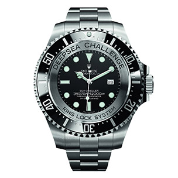
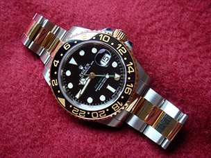

Rolex SA and its subsidiary Montres Tudor SA design, manufacture, distribute and service wristwatches sold under the Rolex and Tudor brands. Founded by Hans Wilsdorf and Alfred Davis in London, England in 1905 as Wilsdorf and Davis, Rolex moved its base of operations to Geneva, Switzerland in 1919.
The first self-winding Rolex wristwatch was offered to the public in 1931 (so-called the "bubbleback" due to the large caseback), preceded to the market by Harwood which patented the design in 1923 and produced the first self-winding watch in 1928, powered by an internal mechanism that used the movement of the wearer's arm. This not only made watch-winding unnecessary, but kept the power from the mainspring more consistent resulting in more reliable time keeping.
Rolex participated in the development of the original quartz watch movements. Although Rolex has made very few quartz models for its Oyster line, the company's engineers were instrumental in design and implementation of the technology during the late 1960s and early 1970s.
In 1968, Rolex collaborated with a consortium of 16 Swiss watch manufacturers to develop the Beta 21 quartz movement used in their Rolex Quartz Date 5100. Within about five years of research, design, and development, Rolex created the "clean-slate" 5035/5055 movement that would eventually power the Rolex Oysterquartz.
Rolex is the largest manufacturer of Swiss made certified chronometers. In 2005, more than half the annual production of COSC certified watches were Rolexes.
To date, Rolex still holds the record for the most certified chronometer movements in the category of wristwatches.
Source: The Beginning of a New Watch Age